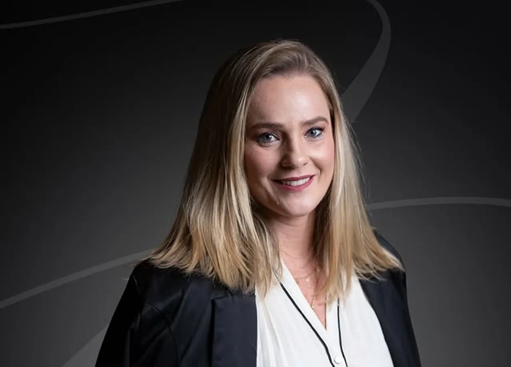

ROTINA FINANCEIRA
BPO financeiro
Para quem precisa tirar as tarefas financeiras do improviso e ter uma rotina mais organizada. A terceirização aproxima registros e informações do dia a dia da gestão.
Conversar sobre BPONAVIS CONSULTORIA / CRICIÚMA · SC
Organizamos o financeiro para transformar números em clareza — e clareza em decisões empresariais mais conscientes.

01 / O CENÁRIO
A operação avança. As contas também. Mas as respostas importantes continuam difíceis de encontrar.
Se alguma dessas situações parece familiar, a próxima decisão não precisa ser tomada no improviso.
DA REAÇÃO À DIREÇÃO
Gestão financeira não é apenas registrar o passado. É criar uma base para compreender o presente e planejar os próximos passos.
02 / SOLUÇÕES
Não existe uma resposta única para todos os negócios. O ponto de partida é entender o que precisa de organização, análise e acompanhamento.
ROTINA FINANCEIRA
Para quem precisa tirar as tarefas financeiras do improviso e ter uma rotina mais organizada. A terceirização aproxima registros e informações do dia a dia da gestão.
Conversar sobre BPODECISÕES E PRIORIDADES
Para empresários que querem examinar os números com mais critério, organizar prioridades e ganhar clareza antes de decidir os próximos movimentos.
Conversar sobre mentoriaVISÃO DE FUTURO
Para transformar objetivos em uma direção de trabalho mais nítida, com atenção à organização, aos indicadores e à realidade do negócio.
Conversar sobre planejamento03 / MÉTODO FAROL
Criado por Katarine Manique Barreto, o Método FAROL orienta a abordagem estratégica da Navis. Um convite para olhar a gestão com mais clareza antes de escolher o próximo movimento.
Entender a abordagem04 / QUEM ESTÁ À FRENTE
Katarine
Manique Barreto
Fundadora da Navis Consultoria, mentora de empresários, criadora do Método FAROL e apresentadora do Lucrandocast.
Ela descreve a Navis como uma resposta à falta de clareza financeira que impede empresas de compreender sua realidade e decidir com segurança. Aqui, a conversa começa pelos desafios concretos de cada negócio — não por uma fórmula pronta.
05 / PRÓXIMO PASSO
Conte, em linhas gerais, qual desafio financeiro sua empresa enfrenta hoje. A equipe da Navis pode orientar a conversa inicial pelo canal oficial de atendimento.
Conversar com a Navis WHATSAPP OFICIAL · (48) 99608-2242